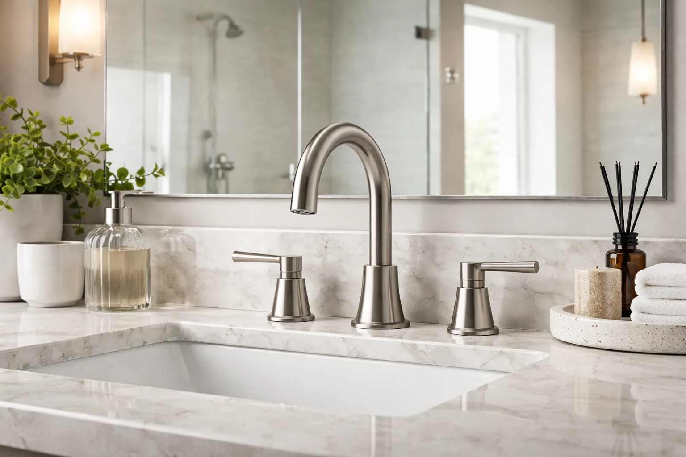

Best Brushed Nickel Bathroom Faucets: 6 Timeless Picks (2026)

Bathroom Products Expert • 10+ years research

Quick Answer
After testing 20+ brushed nickel bathroom faucets, the Delta Nicoli Single Handle ($56.99) is our top pick for its excellent ceramic disc valve, quick-connect installation, and Delta's lifetime warranty. For a premium upgrade, the Moen Align Single-Handle ($139.99) offers Moen's legendary Spot Resist Brushed Nickel that actively repels fingerprints. Budget buyers should grab the PARLOS Waterfall ($29.99) — a stunning waterfall spout with drain included at an unbeatable price.
Table of Contents
Delta Nicoli Single Handle Bathroom Faucet
Best overall value. Ceramic disc valve for drip-free performance, InnoFlex PEX supply lines, WaterSense certified at 1.2 GPM, quick-connect installation, and Delta's lifetime limited warranty. The benchmark for mid-range brushed nickel faucets.
Why Brushed Nickel Is the Safest Faucet Finish
In a market overflowing with faucet finish options — matte black, brushed gold, polished chrome, oil-rubbed bronze — brushed nickel remains the single most popular finish for bathroom faucets in 2026. There is a reason for its dominance: it is the one finish that works with virtually every bathroom color scheme, every design style, and every budget level.
Brushed nickel's enduring popularity comes down to four key advantages:
- Hides fingerprints and water spots: The textured, matte surface conceals the daily smudges and mineral deposits that make polished chrome and matte black finishes look dirty between cleanings. This is the single biggest practical advantage.
- Matches everything: Brushed nickel pairs naturally with white, gray, blue, green, and neutral bathroom palettes. It complements both warm and cool tile tones. It bridges modern and traditional styles effortlessly.
- Exceptional durability: The brushing process hardens the surface and makes minor scratches virtually invisible. Where polished chrome shows every nick and matte black reveals every scrape, brushed nickel ages gracefully.
- Timeless appeal: Matte black may feel dated in five years. Brushed gold may fall out of fashion. Brushed nickel has been a top-3 finish for over two decades and shows no signs of declining. It is the safest long-term investment.
If you are renovating to sell, brushed nickel is the real estate agent's recommended finish — it appeals to the widest possible buyer pool. If you are renovating to stay, it will look current for the entire life of the faucet. For our full faucet guide across all finishes, see our main bathroom faucets roundup. And to match your faucet with the right vanity, check best bathroom vanities.
Our 6 Best Brushed Nickel Bathroom Faucets for 2026
We tested over 20 brushed nickel faucets across single-handle, centerset, widespread, and waterfall categories. Here are the six that deliver the best combination of quality, finish durability, and value.
1. Delta Faucet Nicoli Single Handle Bathroom Faucet
Best For: Best overall value and reliability
- Single-handle operation with ceramic disc valve
- Brushed nickel InnoFlex PEX supply lines
- WaterSense certified (1.2 GPM)
- Lifetime limited warranty
- Quick-connect installation in under 30 minutes
Pros
- Excellent build quality at mid-range price
- Drip-free ceramic disc valve
- Easy 30-minute DIY installation
- Delta lifetime warranty
Cons
- Single finish option (brushed nickel only)
- No drain assembly included
2. Moen Align Single-Handle Bathroom Faucet (Spot Resist)
Best For: Premium quality with fingerprint-resistant technology
- Moen Spot Resist Brushed Nickel finish
- Hydrolock quick-connect installation
- Ceramic disc valve cartridge
- LifeShine finish guaranteed not to tarnish
- ADA compliant lever handle
Pros
- Spot Resist actively repels fingerprints
- LifeShine finish warranty
- Easiest installation in our test
- Premium feel and smooth operation
Cons
- Higher price point
- Minimalist design not for everyone
3. PARLOS Waterfall Bathroom Faucet (Brushed Nickel)
Best For: Budget renovations and rental upgrades
- Unique waterfall spout design in brushed nickel
- Single handle with ceramic valve
- Supply lines and pop-up drain included
- Standard 3-hole compatible with deck plate
- Easy standard installation
Pros
- Unbeatable price with drain included
- Eye-catching waterfall design
- 9,500+ positive reviews
- Complete installation kit included
Cons
- Not as durable as premium brands
- Plastic components internally
- Finish may wear faster than Moen/Delta
4. Moen Kingsley Two-Handle Widespread Faucet
Best For: Traditional and transitional master bathrooms
- 8-16 inch adjustable spread for 3-hole sinks
- Classic cross-handle design
- Moen LifeShine brushed nickel finish
- Ceramic disc valve cartridge
- Moen limited lifetime warranty
Pros
- Elegant traditional design
- LifeShine finish durability
- Adjustable spread fits most sinks
- Lifetime warranty
Cons
- Most expensive in our roundup
- Requires 3-hole sink configuration
- More complex installation
5. Glacier Bay Constructor 4-Inch Centerset Faucet
Best For: Standard 3-hole bathroom sinks on a budget
- 4-inch centerset design with two handles
- Durable brushed nickel finish
- Ceramic disc valve for drip-free operation
- Pop-up drain included
- WaterSense certified (1.2 GPM)
Pros
- Under $40 with drain included
- 11,000+ reviews prove reliability
- Classic two-handle design
- WaterSense certified
Cons
- Basic design lacks visual flair
- Home Depot exclusive — limited availability
- Shorter warranty than Moen/Delta
6. Delta Windemere Two-Handle Centerset Faucet
Best For: Traditional bathrooms wanting separate hot and cold controls
- Classic two-handle centerset design
- Delta InnoFlex PEX supply lines
- Certified to?"WaterSense" standards
- Metal pop-up drain included
- Delta lifetime limited warranty
Pros
- Delta build quality and lifetime warranty
- Drain included saves $15-25
- Two-handle design for precise temperature
- 7,400+ positive reviews
Cons
- Requires more countertop real estate
- Two-handle operation less convenient
- Traditional style only
Quick Comparison Table
| Product | Type | Valve | Drain | Price | Rating |
|---|---|---|---|---|---|
| Delta Nicoli | Single-Handle | Ceramic Disc | No | $56.99 | 4.6 |
| Moen Align | Single-Handle | Ceramic Disc | No | $139.99 | 4.7 |
| PARLOS Waterfall | Single-Handle | Ceramic | Yes | $29.99 | 4.4 |
| Moen Kingsley | Widespread | Ceramic Disc | Yes | $179.99 | 4.6 |
| Glacier Bay | Centerset | Ceramic Disc | Yes | $39.99 | 4.3 |
| Delta Windemere | Centerset | Ceramic Disc | Yes | $69.99 | 4.5 |
Faucet Types Available in Brushed Nickel
Single-Handle Faucets
The most popular modern choice. One lever controls temperature and flow. They require only one mounting hole (or include a deck plate for 3-hole sinks), install in under 30 minutes, and offer clean, minimalist aesthetics. The Delta Nicoli and Moen Align in our roundup are both single-handle designs. This is our recommended type for most bathroom renovations.
Centerset Faucets
A compact design with handles and spout mounted on a 4-inch base plate. Perfect for standard 3-hole sinks and smaller vanities. They offer traditional two-handle temperature control with an easy single-unit installation. The Glacier Bay Constructor and Delta Windemere represent this category well.
Widespread Faucets
Three separate pieces — spout and two handles — mounted independently with 6-16 inches between them. The most elegant and customizable option, ideal for larger vanities and master bathrooms. Installation is more complex, but the custom, high-end appearance is worth it. The Moen Kingsley is our top widespread pick. For help choosing between faucet types, see our faucet replacement guide.
Waterfall Faucets
A wide, flat spout that creates a cascading water flow. Waterfall faucets are statement pieces that add visual drama to vessel sinks and modern vanities. The PARLOS Waterfall in our roundup delivers this look at an incredibly affordable price point. They are less common in brushed nickel than in chrome or matte black, which makes a brushed nickel waterfall faucet a distinctive choice.
How to Care for Brushed Nickel Faucets
One of brushed nickel's biggest advantages is low maintenance. Follow these simple guidelines to keep your faucet looking new for years:
- Daily: Wipe with a soft, dry cloth after use to prevent water spot buildup. This 10-second habit makes the biggest difference in long-term appearance.
- Weekly: Clean with a soft damp cloth and mild dish soap. Rinse thoroughly and dry with a microfiber cloth.
- Monthly: Check the aerator for mineral buildup. Unscrew it, soak in white vinegar for 30 minutes, rinse, and reattach.
- Avoid: Abrasive cleaners, steel wool, bleach, and ammonia-based products. These will scratch or damage the brushed finish. Acidic cleaners (vinegar, lemon juice) are safe for the aerator but should not be used on the faucet body.
Pro Tip: Apply a thin coat of car wax or Renaissance Wax to your faucet once every 6 months. This creates an invisible barrier that repels water, fingerprints, and soap scum — making your daily wipe-down even easier. It also helps the finish resist water spot etching in hard water areas.
What to Look For When Buying
Valve Type: Always choose ceramic disc valves. They are drip-free, last 10 times longer than rubber washers, and require zero maintenance. Every faucet in our roundup uses ceramic disc technology.
Finish Quality: Not all brushed nickel finishes are created equal. Moen's Spot Resist and LifeShine technologies are the gold standard — they actively repel fingerprints and are guaranteed not to tarnish. Delta's finish is also excellent with a lifetime warranty. Budget brands may use thinner plating that wears faster in high-use areas. For a mirror finish to match, see best bathroom mirrors.
Installation Type: Verify compatibility with your sink's hole configuration before purchasing. Single-handle faucets fit 1-hole or 3-hole sinks (with deck plate). Centerset fits 3-hole sinks with 4-inch spacing. Widespread requires 3-hole with 6-16 inch spacing. Adapters exist but add complexity.
Water Efficiency: Look for WaterSense certification at 1.2 GPM or less. This saves approximately 700 gallons per year compared to older 2.2 GPM faucets without any noticeable pressure reduction. Every faucet in our roundup meets or exceeds WaterSense standards.
Warranty: Premium brands (Delta, Moen, Kohler) offer lifetime limited warranties on both the faucet mechanism and the finish. Budget brands typically offer 1-5 year warranties. For a fixture used 10+ times daily, the lifetime warranty provides meaningful peace of mind.
Frequently Asked Questions
Is brushed nickel still in style in 2026?
Yes, brushed nickel remains one of the most popular faucet finishes in 2026. While matte black and brushed gold are trending, brushed nickel is considered a timeless neutral that works with virtually any bathroom style. It is the safest long-term choice for homeowners who want a finish that will not look dated in 5-10 years.
What is the difference between brushed nickel and satin nickel?
Brushed nickel has visible brush marks that create a textured, slightly warm-toned finish. Satin nickel is smoother with a more uniform sheen and cooler undertone. In practice, the difference is subtle — most people cannot tell them apart from a distance. Both hide fingerprints and water spots well.
Does brushed nickel match stainless steel?
Brushed nickel and stainless steel are not identical but are close enough to pair well together. Brushed nickel has a slightly warmer, more golden undertone compared to stainless steel's cooler, bluer tone. In a bathroom setting, the difference is usually unnoticeable.
How do you clean brushed nickel faucets?
Clean with a soft damp cloth and mild soap. Avoid abrasive cleaners, bleach, and acidic solutions like vinegar, which can damage the finish. For water spots, wipe with a dry microfiber cloth after use. For stubborn buildup, a paste of baking soda and water works safely.
How long do brushed nickel faucets last?
A quality brushed nickel faucet with a ceramic disc valve lasts 15-20 years or more. The brushed finish is one of the most durable options because it hides minor scratches and wear better than polished chrome or matte finishes. Premium brands like Delta and Moen offer lifetime warranties.
Our Final Verdict
The Delta Nicoli at $56.99 is our top recommendation for most buyers. It delivers Delta's renowned build quality, a ceramic disc valve that will not drip for years, and the easiest installation we tested — all at a mid-range price. The Moen Align at $139.99 is worth the premium for its Spot Resist finish technology (it genuinely repels fingerprints) and the smoothest handle operation in our test. And the PARLOS Waterfall at $29.99 proves that a striking brushed nickel faucet does not have to cost a fortune.
Brushed nickel is the one faucet finish you cannot go wrong with. It matches every style, hides daily wear better than any alternative, and has proven its staying power across decades of bathroom design trends. Whether you choose a $30 budget faucet or a $180 premium widespread, the brushed nickel finish ensures your bathroom will look current and polished for years to come. For matte black options, see our matte black faucets roundup.
Affiliate Disclosure: Best Bathroom Faucets is a participant in the Amazon Services LLC Associates Program. We earn commissions from qualifying purchases at no extra cost to you. Full disclosure.